Chapter 4: Probability and Sampling Distributions
Expanded from Statistics_Chapter4_Probability_and_Sampling_Distribution.pdf (11 pages) · View original handwritten pages
In Chapter 3 we saw that a sample statistic from a random sample varies by chance, yet across many samples its values form a regular sampling distribution. This chapter develops the mathematical machinery behind sampling distributions: discrete and continuous random variables, expected values and variance rules (including correlated portfolio risk), the Law of Large Numbers, and the Central Limit Theorem (CLT).
4.1 Random Variables: Discrete and Continuous
A random variable is a variable whose value is a numerical outcome of a random phenomenon (usually denoted by capital letters such as $X$ or $Y$). Its probability distribution specifies what values $X$ can take and how probabilities are assigned to those values.
Discrete Random Variables and Probability Histograms
A random variable $X$ is discrete if it takes a finite (or countably infinite) list of possible values $x_1, x_2, \dots, x_k$. Its probability distribution lists each value alongside its probability $p_i = P(X = x_i)$:
| Value of $X$ | $x_1$ | $x_2$ | $x_3$ | $\cdots$ | $x_k$ |
|---|---|---|---|---|---|
| Probability | $p_1$ | $p_2$ | $p_3$ | $\cdots$ | $p_k$ |
Every probability $p_i$ must satisfy $0 \le p_i \le 1$, and the probabilities of all possible values must sum to $1$ ($\sum_{i=1}^k p_i = 1$). To find the probability of any event, simply add the probabilities $p_i$ of the individual values $x_i$ that make up that event.
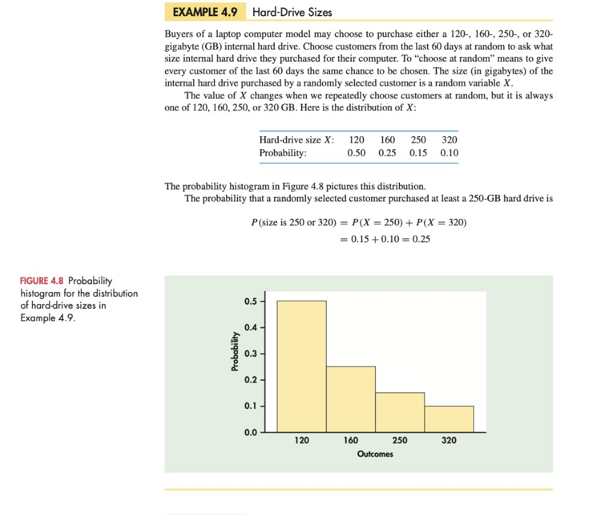
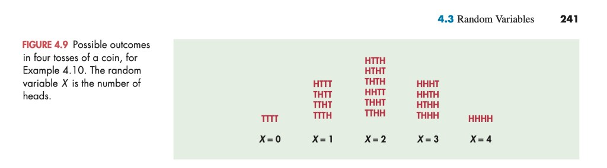
Counting how many of the $16$ equally likely sequences produce each head count:
• $P(X = 0) = \frac{1}{16} = 0.0625$ (`TTTT`)
• $P(X = 1) = \frac{4}{16} = 0.2500$ (`HTTT`, `THTT`, `TTHT`, `TTTH`)
• $P(X = 2) = \frac{6}{16} = 0.3750$ (`HHTT`, `HTHT`, `HTTH`, `THHT`, `THTH`, `TTHH`)
• $P(X = 3) = \frac{4}{16} = 0.2500$ (`HHHT`, `HHTH`, `HTHH`, `THHH`)
• $P(X = 4) = \frac{1}{16} = 0.0625$ (`HHHH`)
Therefore, the probability of at least two heads is $P(X \ge 2) = 0.375 + 0.25 + 0.0625 = \mathbf{0.6875}$, and the probability of at least one head is $P(X \ge 1) = 1 - P(X = 0) = 1 - 0.0625 = \mathbf{0.9375}$.
Continuous Random Variables and Density Curves
A random variable $X$ is continuous if it takes all real values in an interval of numbers. Its probability distribution is described by a density curve, and the probability of any event is the area under the density curve and above the values of $X$ that make up the event.
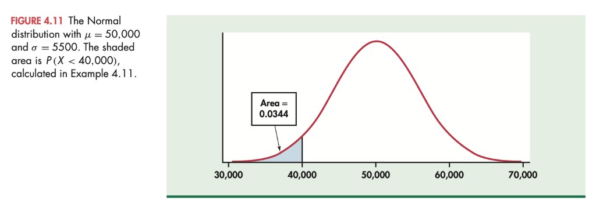
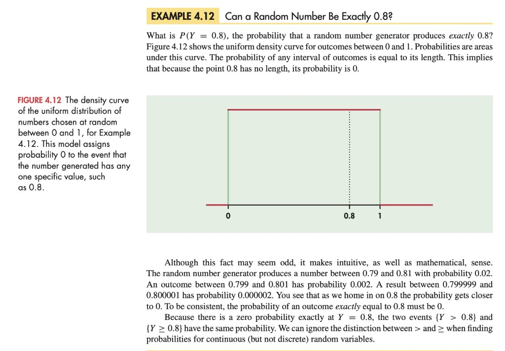
4.2 Means and Variances of Random Variables
Just as we summarized sample data with $\bar{x}$ and $s$, we summarize the probability distribution of a random variable $X$ with its population mean $\mu_X$ (expected value) and population standard deviation $\sigma_X$.
The Mean (Expected Value) of a Discrete Random Variable
In a lottery or skewed distribution, possible outcomes are not equally likely, so an unweighted average makes no sense. To find the mean $\mu_X$ (also called the expected value $E[X]$) of a discrete random variable $X$, multiply each possible value $x_i$ by its probability $p_i$ and sum the products:
You pay $\$1$ to choose a three-digit number from $000$ to $999$ ($1{,}000$ equally likely numbers). If your number is drawn (probability $1/1{,}000 = 0.001$), the ticket pays $\$500$; otherwise (probability $999/1{,}000 = 0.999$), it pays $\$0$.
The naive average of $\$0$ and $\$500$ is $\$250$, which ignores how rare winning is. Weighting by the probabilities gives the true long-run average payoff per ticket:
$$\mu_X = (\$500)\!\left(\frac{1}{1{,}000}\right) + (\$0)\!\left(\frac{999}{1{,}000}\right) = \mathbf{\$0.50} \quad (\text{50 cents per \$1 ticket}).$$
Example 4.14 (Uniform First Digits $1\text{ to }9$):
If the nine digits $1, 2, \dots, 9$ are equally likely ($p_i = 1/9$ each), the mean is:
$$\mu_X = 1\!\left(\frac{1}{9}\right) + 2\!\left(\frac{1}{9}\right) + \cdots + 9\!\left(\frac{1}{9}\right) = 45 \times \frac{1}{9} = \mathbf{5}.$$
Rules for Means (Linearity of Expectation)
Two algebraic rules govern how means behave when we rescale, shift, or add random variables:
- Rule 1 (Linear transformation): If $X$ is a random variable and $a$ and $b$ are fixed numbers, then:
$$\mu_{a + bX} = a + b\mu_X.$$
- Rule 2 (Addition rule for means): If $X$ and $Y$ are any two random variables (whether independent or correlated!), the mean of their sum is the sum of their means:
$$\mu_{X + Y} = \mu_X + \mu_Y.$$
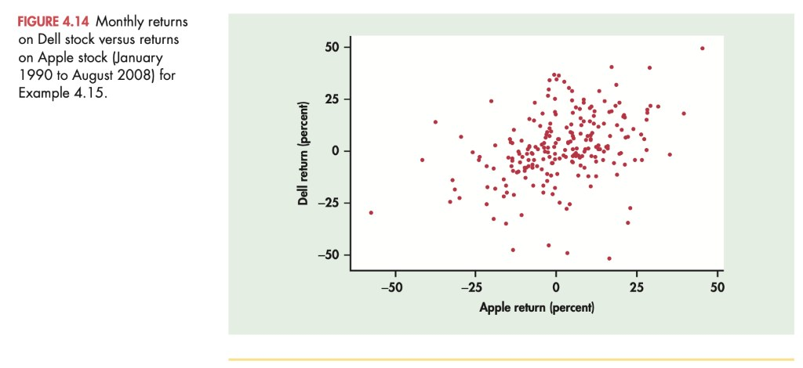
Variance of a Random Variable and the Three Variance Rules
If $X$ is a discrete random variable with mean $\mu_X$, its variance $\sigma_X^2$ is the probability-weighted average of the squared deviations $(x_i - \mu_X)^2$, and its standard deviation $\sigma_X$ is the square root of the variance:
- Rule 1 (Linear transformation $a + bX$): Adding a constant $a$ shifts every outcome equally without changing spread, while multiplying by $b$ scales squared deviations by $b^2$: $$\sigma_{a + bX}^2 = b^2 \sigma_X^2 \quad \Longrightarrow \quad \sigma_{a + bX} = |b|\sigma_X.$$
- Rule 2 (Addition rule for independent random variables): If $X$ and $Y$ are independent, their variances always add—both for $X + Y$ and for $X - Y$: $$\sigma_{X + Y}^2 = \sigma_X^2 + \sigma_Y^2, \qquad \sigma_{X - Y}^2 = \sigma_X^2 + \sigma_Y^2.$$ Warning: Variances of independent random variables add; standard deviations do not add ($\sqrt{\sigma_X^2 + \sigma_Y^2} \neq \sigma_X + \sigma_Y$)!
- Rule 3 (General addition rule for correlated random variables): If $X$ and $Y$ have correlation $\rho$, then: $$\sigma_{X + Y}^2 = \sigma_X^2 + \sigma_Y^2 + 2\rho\sigma_X\sigma_Y, \qquad \sigma_{X - Y}^2 = \sigma_X^2 + \sigma_Y^2 - 2\rho\sigma_X\sigma_Y.$$
For one Pick 3 ticket ($x_1 = 0$ with $p_1 = 0.999$; $x_2 = 500$ with $p_2 = 0.001$; $\mu_X = 0.5$):
$$\sigma_X^2 = (0 - 0.5)^2(0.999) + (500 - 0.5)^2(0.001) = 0.24975 + 249.50025 = \mathbf{249.75}, \qquad \sigma_X = \sqrt{249.75} = \mathbf{\$15.80}.$$ • Subtracting the $\$1$ ticket price gives net winnings $W = X - 1$: by Rule 1, $\mu_W = \mu_X - 1 = -\$0.50$, while $\sigma_W^2 = \sigma_X^2 = 249.75$ ($\sigma_W = \$15.80$).
• Buying two tickets on two different days ($X + Y$, independent): $\mu_{X+Y} = \$0.50 + \$0.50 = \$1.00$, and by Rule 2:
$$\sigma_{X+Y}^2 = \sigma_X^2 + \sigma_Y^2 = 249.75 + 249.75 = 499.50 \implies \sigma_{X+Y} = \sqrt{499.50} = \mathbf{\$22.35} \quad (\text{not } \$15.80 + \$15.80 = \$31.60!).$$
Worked Example 4.20 (Sadie's Correlated Dell + Apple Portfolio Volatility):
From historical monthly returns (1990–2008): Dell has $\mu_X = 2.02\%, \sigma_X = 16.59\%$; Apple has $\mu_Y = 1.75\%, \sigma_Y = 15.09\%$; and their correlation is $\rho = 0.379$. For $R = 0.6X + 0.4Y$, combining Rules 1 and 3 gives:
$$\begin{aligned} \sigma_R^2 &= \sigma_{0.6X + 0.4Y}^2 = (0.6)^2 \sigma_X^2 + (0.4)^2 \sigma_Y^2 + 2\rho(0.6\sigma_X)(0.4\sigma_Y) \\ &= (0.6)^2(16.59)^2 + (0.4)^2(15.09)^2 + 2(0.379)(0.6 \times 16.59)(0.4 \times 15.09) \\ &= 99.082 + 36.433 + 45.545 = \mathbf{181.06}, \end{aligned}$$ so the portfolio standard deviation is $\sigma_R = \sqrt{181.06} = \mathbf{13.46\%}$. Notice the power of diversification: the $60/40$ portfolio achieves a higher mean return ($1.91\%$) than Apple ($1.75\%$) while having lower volatility ($13.46\%$) than either Dell ($16.59\%$) or Apple ($15.09\%$) alone!
4.3 The Sampling Distribution of a Sample Mean ($\bar{x}$)
When we draw a simple random sample of size $n$ and compute the sample mean $\bar{x}$ (such as measuring the odor threshold of dimethyl sulfide in wine across $n = 10$ tasters in Example 4.21, obtaining $\bar{x} = 27.4\;\mu\text{g/L}$), the statistic $\bar{x}$ is itself a random variable. Why is $\bar{x}$ a trustworthy estimate of the unknown population mean $\mu$?
The Law of Large Numbers (LLN) vs. the "Law of Small Numbers"
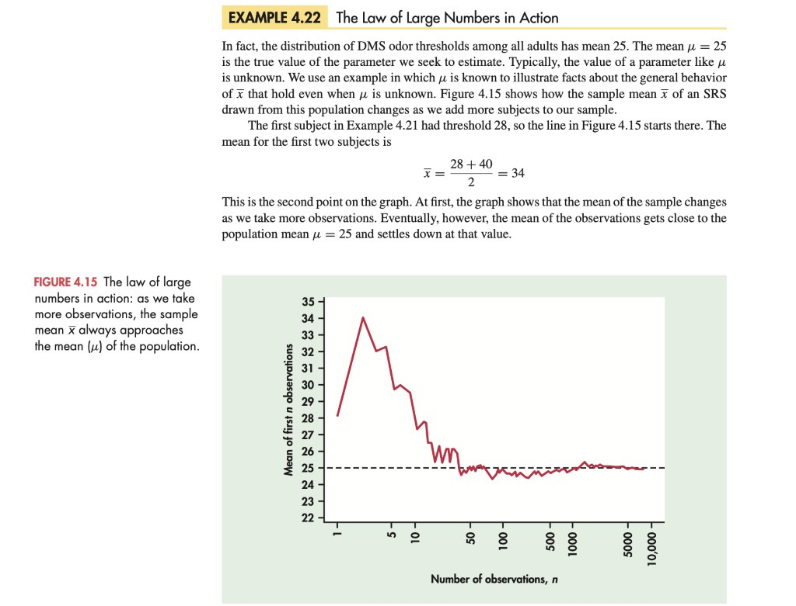
- Fallacy of the "Law of Small Numbers": Psychologists note that most people intuitively expect even short sequences of random events to display the long-run average behavior (for instance, expecting a coin after four heads in a row to owe them a tail). Because the coin has no memory, the Law of Large Numbers operates only by swamping early streaks over a huge number of trials, not by compensating for past outcomes. That is why no betting system (such as doubling your bet after every roulette loss) can beat the house long-run mean $\mu$ with a finite bankroll.
- Weakly dependent industrial observations: What if consecutive measurements on a factory assembly line (such as screen mesh tension) are slightly correlated? Mathematicians have proven that as long as the dependence between observations dies out fast enough as they are separated further in time, the Law of Large Numbers still holds.
Mean and Standard Deviation of the Sample Mean $\bar{x}$
Suppose that $\bar{x}$ is the mean of an SRS of size $n$ drawn from a large population with mean $\mu$ and standard deviation $\sigma$. Using the rules for means and variances on $\bar{x} = \frac{1}{n}(X_1 + X_2 + \cdots + X_n)$, we obtain the exact center and spread of the sampling distribution of $\bar{x}$:
Why does $\sigma_{\bar{x}} = \sigma/\sqrt{n}$ hold? By Rule 2 for independent observations, $\operatorname{Var}(X_1 + \cdots + X_n) = n\sigma^2$; multiplying by $b = 1/n$ scales the variance by $(1/n)^2$, giving $\sigma_{\bar{x}}^2 = (1/n^2)(n\sigma^2) = \sigma^2/n$, and taking the square root yields $\sigma/\sqrt{n}$. This formula carries two foundational lessons for experiment design:
- Unbiasedness ($\mu_{\bar{x}} = \mu$): The sample mean $\bar{x}$ has no systematic tendency to overestimate or underestimate $\mu$.
- The $\sqrt{n}$ precision law ($\sigma_{\bar{x}} = \sigma/\sqrt{n}$): Averages are less variable than individual observations, but precision improves only with the square root of the sample size. To cut the standard deviation of $\bar{x}$ in half, you must take a sample $4$ times as large ($4n$); to reduce it by a factor of $10$, you need $100$ times as many observations.
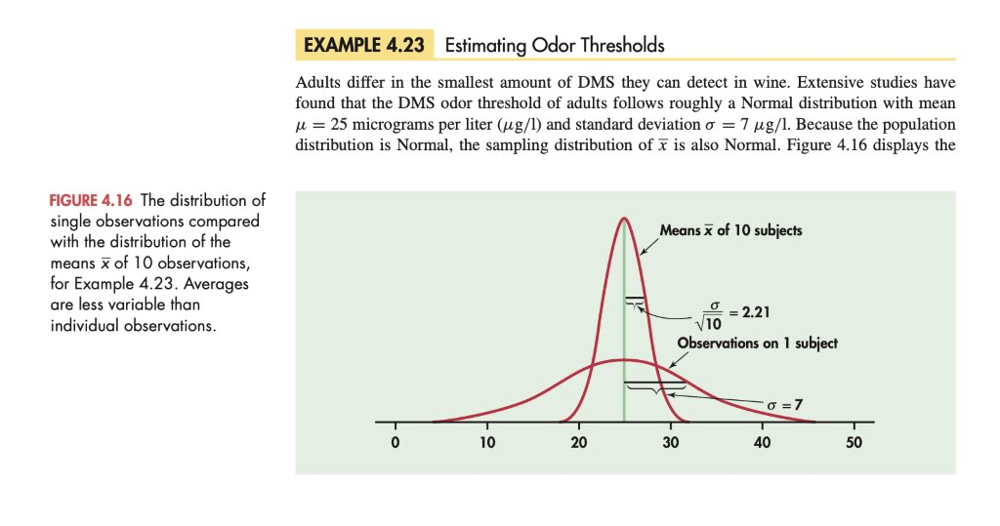
The Central Limit Theorem (CLT)
What if the population distribution is not Normal—what if it is heavily skewed, discrete, or multi-peaked? The most celebrated theorem in probability and statistics answers that question:
To see the Central Limit Theorem in action, the notes examine Example 4.24 (United Airlines Departure Delays at Chicago O'Hare). Across all $73{,}423$ flights in 2009, individual departure delays have mean $\mu = 11.793\text{ minutes}$ and are violently right-skewed (extending past $350\text{ minutes}$). Yet when we draw $1{,}000$ SRSs of size $n = 100$ flights, the distribution of the sample mean $\bar{x}$ transforms into a tight, symmetric Normal bell curve:
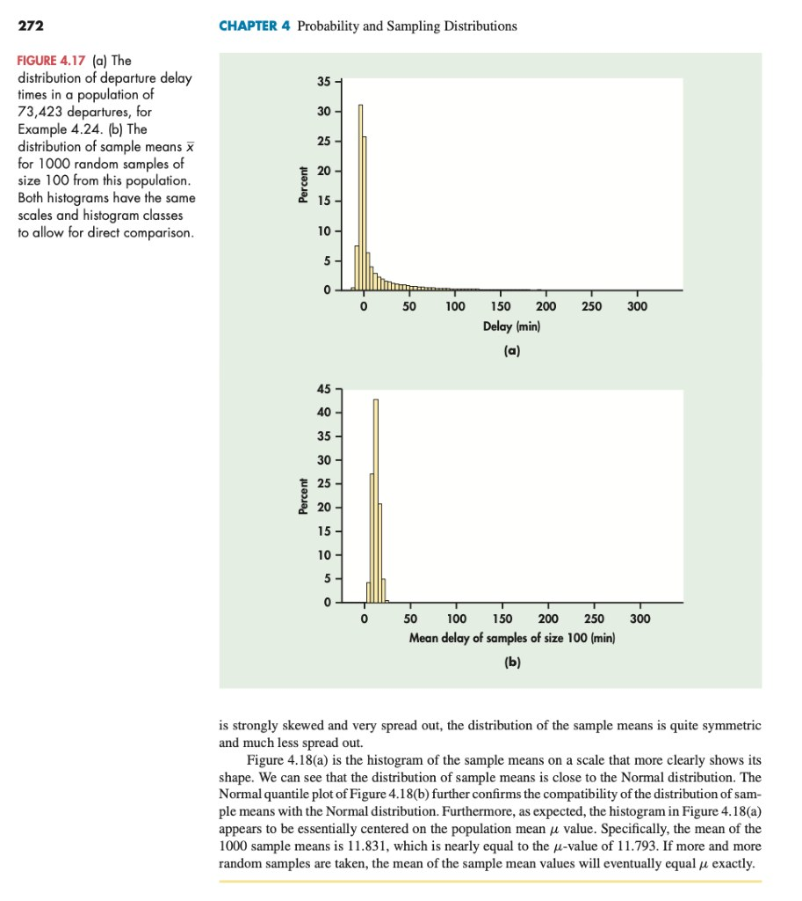
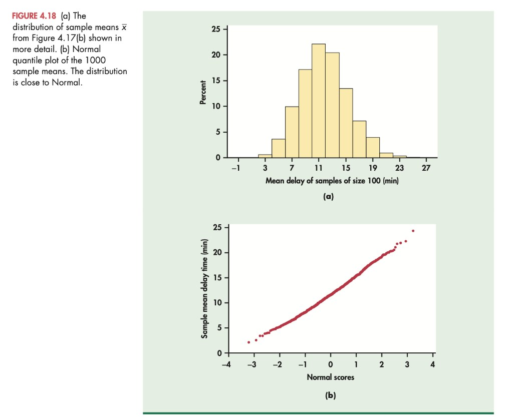
The time $X$ required for a technician to perform preventive maintenance on a commercial air-conditioning unit follows a strongly right-skewed Exponential distribution with mean $\mu = 1\text{ hour}$ and standard deviation $\sigma = 1\text{ hour}$. Your company operates $n = 70$ units and budgets an average of $50\text{ minutes}$ ($50/60 \approx 0.83\text{ hours}$) per unit. What is the probability that the actual average maintenance time $\bar{x}$ across the $70$ units exceeds $50\text{ minutes}$ ($\bar{x} > 0.83$)?
1. Apply the CLT to find the approximate distribution of $\bar{x}$: $$\mu_{\bar{x}} = \mu = 1\text{ hour}, \qquad \sigma_{\bar{x}} = \frac{\sigma}{\sqrt{n}} = \frac{1}{\sqrt{70}} \approx \mathbf{0.12\text{ hour}}.$$ Thus $\bar{x}$ is approximately $N(1,\; 0.12)$.
2. Standardize $\bar{x} = 0.83$ and look up the Normal tail area: $$z = \frac{0.83 - 1.00}{0.12} = \mathbf{-1.42} \quad \Longrightarrow \quad P(\bar{x} > 0.83) = P(Z > -1.42) = 1 - 0.0778 = \mathbf{0.9222}.$$ There is about a $92.2\%$ chance that the average maintenance time per unit will exceed the $50\text{-minute}$ budget! (As Figure 4.20 below shows, the exact Gamma convolution gives $0.9294$—so the CLT Normal approximation is off by only $0.007$.)
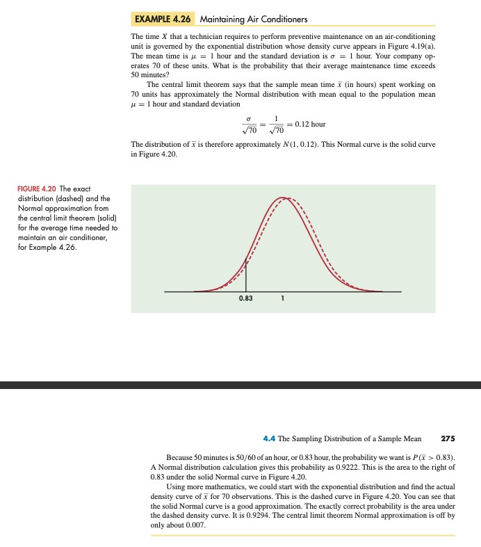
From the Handwritten Notes
Open the original handwritten page scans from Statistics_Chapter4_Probability_and_Sampling_Distribution.pdf below:
View original page 2 — Four-coin-toss discrete distribution & tire tread-life Normal calculation

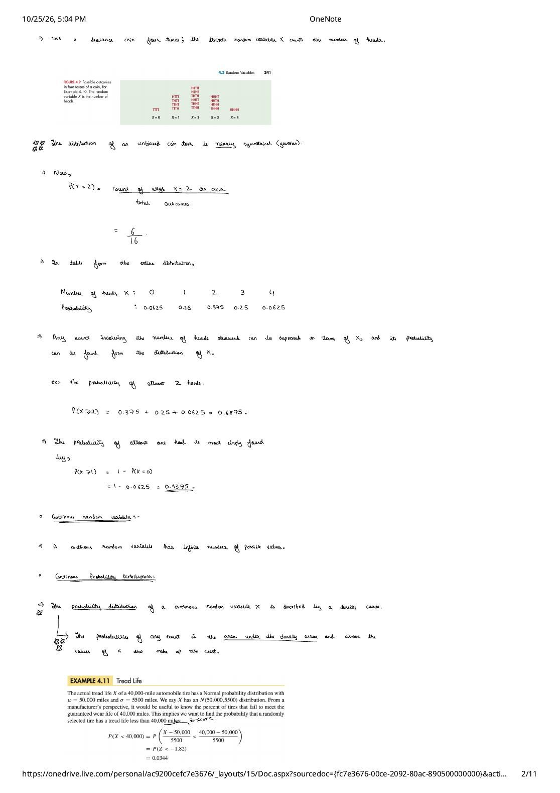
View original page 5 — Portfolio mean return & the three rules for variances

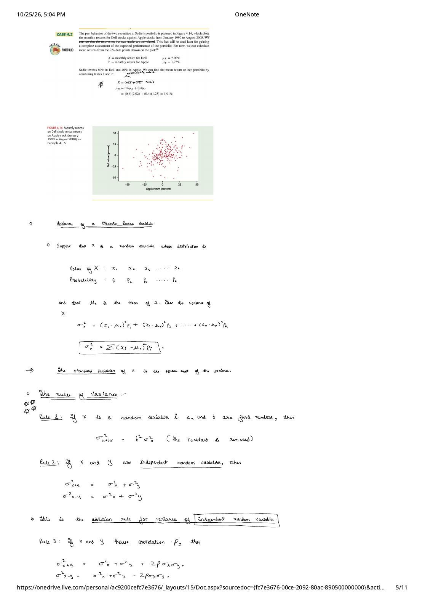
View original page 6 — Pick 3 lottery variance & correlated Dell/Apple portfolio volatility

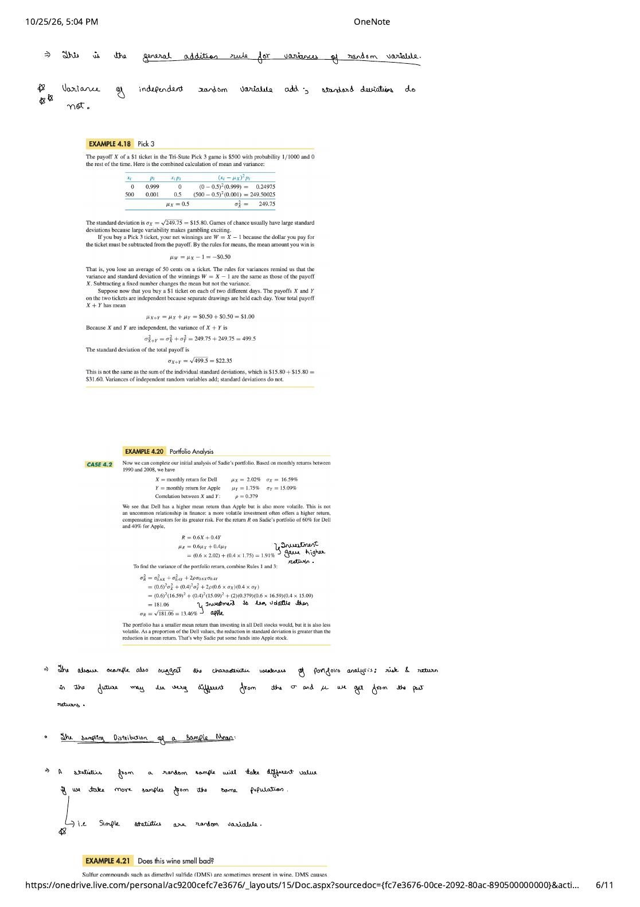
View original page 8 — Mean and standard deviation of $\bar{x}$ ($\mu$ and $\sigma/\sqrt{n}$)

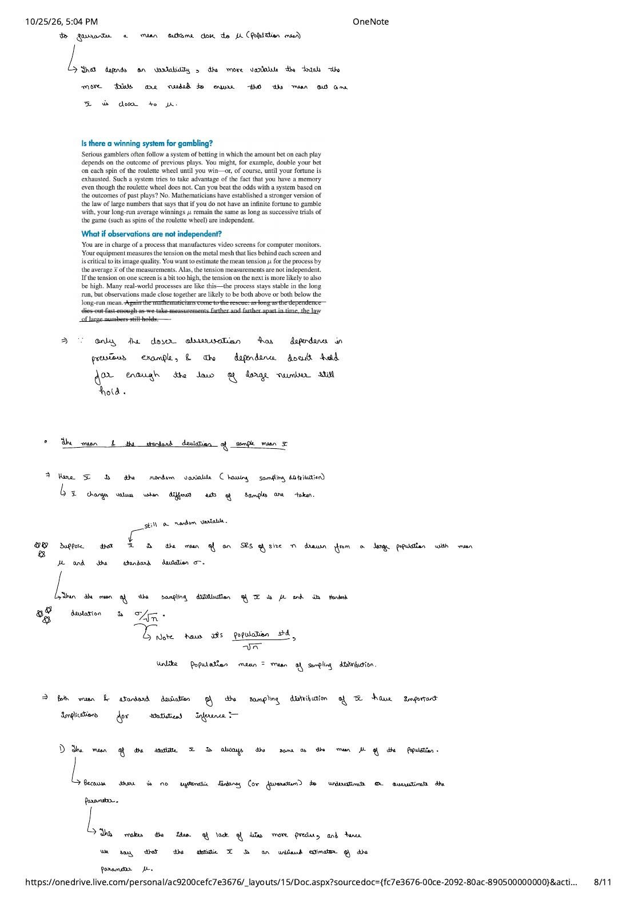
View original page 9 — The $\sqrt{n}$ factor & the Central Limit Theorem

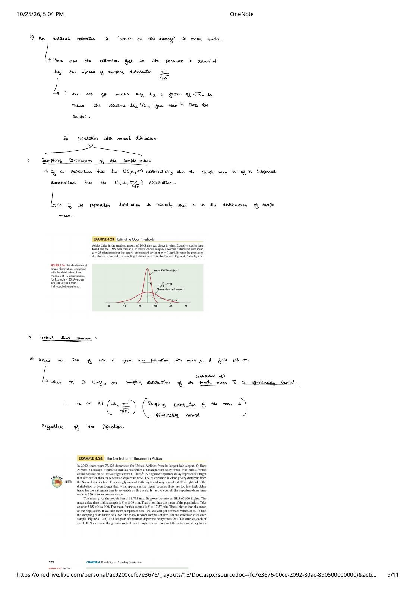